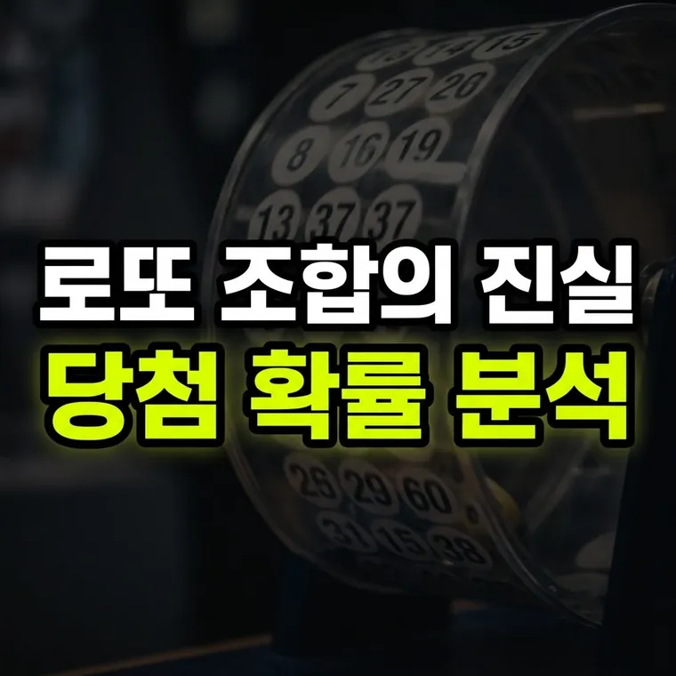

조합론으로 풀어보는 로또: 연속 번호와 홀짝 비율, 당첨 확률은 달라질까?
홀짝 3:3 조합은 전체의 약 33.5%이고 연속 번호가 들어 있는 조합은 약 53%입니다. 하지만 이는 조합의 개수가 많다는 뜻일 뿐, 내가 고른 한 게임의 당첨 확률은 모두 8,145,060분의 1로 같습니다.

번호 조합 방식에 대한 수학적 접근
로또 번호를 고를 때 "홀수와 짝수의 비율을 3:3으로 맞추어야 당첨 가능성이 높다"거나 "연속된 번호(예: 12, 13)를 포함시키는 것이 좋다"는 등의 이야기를 한 번쯤 들어보셨을 것입니다. 실제로 로또 관련 커뮤니티나 정보성 글을 보면 전체 814만 개 조합 중 특정 조건을 만족하는 번호 조합의 비율을 계산하여 보여주는 경우가 많습니다.
그렇다면 수학의 한 분야인 '조합론(Combinatorics)' 관점에서 바라볼 때, 이러한 홀짝 비율이나 연속 번호의 포함 여부가 개별 게임의 당첨 확률을 정말로 바꿔줄 수 있을까요? 이번 글에서는 조합론의 기초 개념을 적용하여 로또 번호 구성의 통계적 의미를 살펴보겠습니다.
홀짝 비율에 숨겨진 조합론의 원리
1부터 45까지의 숫자 중 홀수는 23개, 짝수는 22개로 구성되어 있습니다. 이 중 6개의 숫자를 무작위로 선택할 때 나타날 수 있는 홀수와 짝수의 조합 패턴을 조합 공식(nCr)으로 계산해 보면 다음과 같습니다.
- 홀짝 3:3 조합: 23개의 홀수 중 3개를 뽑고(23C3), 22개의 짝수 중 3개를 뽑는(22C3) 가짓수를 곱하면 약 272만 가지가 나옵니다. 이는 전체 8,145,060가지 조합 중 약 33.5%를 차지합니다.
- 홀짝 4:2 또는 2:4 조합: 각각 전체의 약 25.1%와 22.7%를 차지합니다.
- 홀짝 6:0 또는 0:6 조합: 6개 모두 홀수이거나 모두 짝수인 조합은 각각 약 1.2%와 0.9% 수준에 불과합니다.
이 계산 결과만 보면 "홀짝 3:3이나 4:2, 2:4 비율을 선택하는 것이 6:0이나 0:6보다 훨씬 당첨 확률이 높다"고 오해하기 쉽습니다. 하지만 여기에 중요한 통계적 왜곡이 있습니다.
전체 8,145,060개의 조합 중 '3:3 비율을 가진 전체 조합의 개수'가 많을 뿐이지, 내가 선택한 '특정 3:3 번호 조합 1개'가 당첨될 확률은 '6:0 번호 조합 1개'의 당첨 확률과 정확히 8,145,060분의 1로 동일합니다. 즉, 비율 집단 전체의 표본이 크다는 것과 단일 게임의 확률이 높아진다는 것은 전혀 다른 개념입니다.
연속 번호(연번) 출현 빈도와 개별 확률의 차이
연속된 번호(예: 14, 15)가 포함된 조합 역시 비슷한 착각을 불러일으킵니다.
조합론적으로 1부터 45까지의 숫자 중 2개 이상의 연속 번호를 적어도 한 쌍 포함하는 조합의 가짓수를 계산해 보면, 전체 8,145,060개 조합 중 약 53%를 차지합니다. 즉, 전체 조합 중 절반 정도는 연속 번호를 포함하고 있다는 뜻입니다.
이 때문에 실제 회차별 추첨 결과에서도 연속 번호가 자주 등장하는 것처럼 보입니다. 그러나 이 역시 '연속 번호를 포함하는 전체 조합들의 집합'이 커서 나타나는 현상일 뿐, 특정 연속 번호 조합(예: 1, 2, 3, 4, 5, 6) 하나가 당첨될 확률 자체가 올라가는 것은 아닙니다.
조합론 지식은 번호 선택에서 어떤 의미가 있을까
그렇다면 이러한 조합론적 지식은 실제 번호를 고를 때 어떤 의미를 가질 수 있을까요?
- 당첨금 분배에 관한 이야기: '1, 2, 3, 4, 5, 6'이나 '5, 10, 15, 20, 25, 30'처럼 지나치게 규칙적인 번호는 사람들이 호기심으로 직접 고르는 경우가 있습니다. 만약 이런 번호가 당첨되면 같은 번호를 고른 사람이 많아 1인당 당첨금이 줄어들 수 있다는 설명이 있습니다. 다만 이것은 당첨 확률이 아니라 당첨금을 나눠 받는 문제에 관한 이야기이고, 실제로 어떤 번호에 사람이 몰리는지는 확실히 알 수 없습니다.
- 객관적 통계 이해: 조합론의 계산 결과는 특정 패턴이 더 유리하다는 것을 증명해 주는 것이 아니라, 모든 번호 조합이 같은 확률을 가진다는 사실을 보여 줍니다.
어떤 번호 조합을 고르더라도 확률은 같으니, 번호 고르기는 재미로만 즐기시면 됩니다.
· 홀짝 3:3 비율이나 연속 번호를 포함한 전체 조합의 가짓수가 많을 뿐, 단일 조합의 당첨 확률은 모두 같습니다.
· "홀짝 3:3으로 사야 당첨 확률이 높다"는 말은 패턴 집단 전체의 크기와 개별 게임의 확률을 혼동한 통계적 착각입니다.
· 특정 패턴을 피하는 것은 확률을 올리는 방법이 아니라, 당첨 시 나눠 받을 가능성을 줄이려는 개인의 선택에 불과합니다.
이 글의 기준과 예시는 2026년 10월 기준입니다. 법령이나 제도가 바뀌면 내용이 달라질 수 있으니, 신청·신고·계약 전에는 해당 기관에서 최신 기준을 확인하세요. 계산 결과와 설명은 참고용입니다.
🔮 다음 글 예고
다음 글에서는 법인·단체 로또 구매와 공동 구매 시 세금 및 법적으로 주의할 점을 다룹니다.